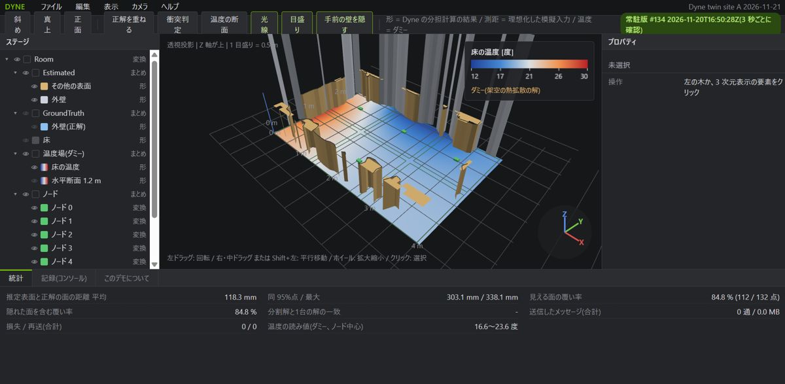

Small computers in a room, computing its physics together.
Physical-Edge Native Architecture (PENA) is an approach for a time when many small computers sit inside physical spaces. Each one senses and computes its own part of the space and talks only with its neighbours; together they keep a live model of the space. A larger computer joins only when a longer forecast is needed.

A real room with six devices (hardware run, 2026-11-21).

The room shape the devices computed. The floor colour is a dummy temperature field.
The idea
Split the space
Each device owns one part of the space and exchanges only the values on the shared edges with its neighbours.
Check it bit for bit
A split computation must match the same model solved on one computer exactly. This is how every result is tested.
Hand it to other tools
The live model is exported to robot simulators (USD for Isaac Sim) and to detailed solvers (ParaView, OpenFOAM).

The room computed by the devices, exported as USD: a Unitree Go2 walks in it in Isaac Sim (pretrained policy).
Projects
Dyne
Runs numerical solvers and small neural networks split over microcontrollers, with a deterministic simulator so everything can be tried without hardware. MIT OR Apache-2.0.